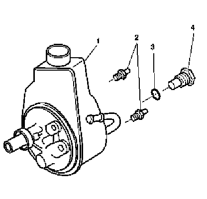
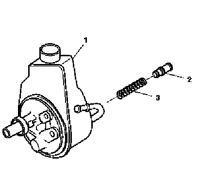
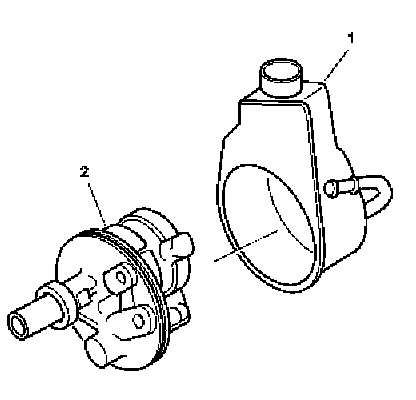
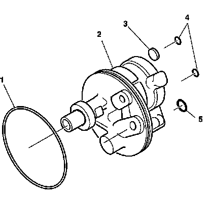
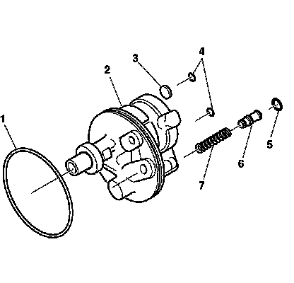

Power Steering Fluid Reservoir: Service and Repair
Power Steering Fluid Reservoir Replacement - Off Vehicle
Disassembly Procedure

1. Drain the power steering fluid from the power steering pump.
2. Remove the pump mounting studs (2).
3. Remove the connector and fitting assembly (4).
4. Remove the O-ring seal (3).

5. If replacement is required, remove the control valve assembly (2) and the flow control spring (3) from the pump housing assembly (1).

6. Remove the reservoir assembly (1) from the pump housing assembly (2).

7. Remove the O-ring seals (1) (4) (5).
8. Remove the magnet (3).
9. Clean the magnet (3).
10. Inspect the welch plug in the power steering pump housing (2). Do not remove. If the welch plug is deformed or dislodged, replace the power steering pump housing (2).
Assembly Procedure

Important: Use new O-ring seals when assembling the power steering pump assembly.
1. Lubricate the O-ring seals (1) (4) (5) with power steering fluid.
2. Install the flow control spring (7) to the pump housing assembly (2).
3. Install the control valve assembly (6) to the flow control spring (7).
4. Install the O-ring seals (1) (4) (5) to the pump housing assembly.
5. Install the magnet (3) to the pump housing assembly (2).
6. Connect the reservoir assembly (1) to the pump housing assembly (2).
7. Install the O-ring seal.
Notice: Refer to Fastener Notice.
8. Install the connector and fitting assembly (4) to the pump housing (1).
9. Install the pump mounting studs (2) to the pump housing (1).
Tighten the pump mounting studs to 58 N.m (44 lb ft).
10. Tighten the connector and fitting assembly.
Tighten the connector and fitting assembly to 75 N.m (55 lb ft).